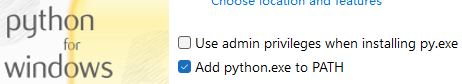
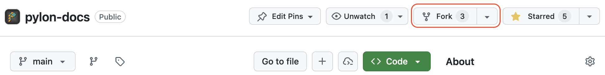
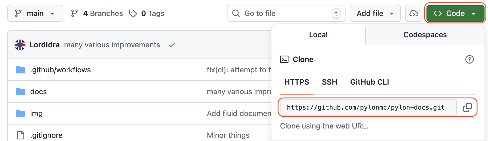
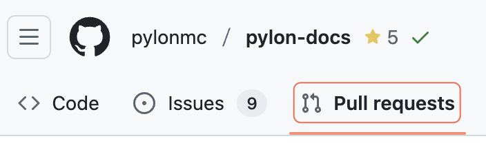

Contributing to documentation
This guide walks you through contributing to this documentation site, which is powered by MkDocs and GitHub pages.
Step 0: Prerequisites
Before you start, make sure you have the following installed on your system:
Git
Git is required to clone the repository and manage your changes.
You can use Git from a command line interface, or use GUI such as GitHub Desktop (recommended).
GitHub Account
You will need a GitHub account to fork the repository and create pull requests.
If you don't have an account yet, you can create one for free.
Python and pip
MkDocs requires a recent version of Python, and the package manager pip, to be installed on your system.
You can check if you already have these installed from the command line (versions may be different):
If Python is not installed, you can download it from the official Python downloads page.
For Windows users
During installation, make sure to check the box that says "Add Python to PATH" if the installer offers such an option (it's usually off by default).

Step 1: Forking the repository
Now head over to the pylon-docs repository.
Click the "Fork" button in the top-right corner of the page to create your own copy of the repository.

Step 2: Cloning your fork
You will need to clone your forked repository to your local machine to be able to preview the changes.
If you use GitHub Desktop, follow these steps.
If you use command line, go to your forked repository on GitHub and click the green "Code" button to copy the HTTPS URL.

Then, execute the following command:
Step 3: Installing dependencies
Now that you have the repository on your local machine, you need to install the required dependencies.
In the pylon-docs directory, run:
This will install MkDocs and all other necessary packages.
Step 4: Making your changes
Now you can start editing the documentation files!
Warning
All changes you make to your fork will NOT affect the official documentation until you submit your changes via a pull request.
The documentation files are written in Markdown. If you need help with the syntax, you can consult Mastering Markdown or review the Markdown file for this page.
4.1 Understanding the documentation structure
The documentation is organized by language in the docs/ directory:
For English documentation, all pages are located in docs/en/. The content is organized into different sections and subdirectories.
Important
Currently, we only accept contributions to the English documentation, as we are still actively working on the content of Pylon. Please stay tuned for future updates regarding contributions to other languages.
Each section has its own directory, and images for that section should be placed in an img/ folder within the same directory.
4.2 Creating a new page
Open your code editor in the pylon-docs directory and follow these steps:
- Navigate to the appropriate subdirectory in
docs/en/(e.g.,docs/en/installation/) - Create a new
.mdfile with a descriptive name
File naming rules:
- File names must end with
.md - Use lowercase letters
- Use hyphens
-instead of spaces - No special characters
- Examples:
installing-addons.md,custom-recipes.md,getting-started.md
Then:
- Write your content using Markdown syntax
- Save the file
- Preview your changes (see Step 5)
4.3 Editing an existing page
- Open the file you want to edit in your code editor
- Make your changes
- Save the file
- Preview your changes (see Step 5)
4.4 Adding images
Image naming conventions
- Use lowercase letters only
- Use hyphens
-instead of spaces - Use descriptive names
- Use PNG format when possible
- Examples:
github-fork.png,custom-item-example.png,crafting-table.png
Where to place images
Images should be placed in an img/ folder in the same directory as your markdown file.
For example:
- If your page is
docs/en/installation/installing-pylon.md - Place images in
docs/en/installation/img/
If the img/ folder doesn't exist in that directory, create it first.
Using images in your page
To embed an image in your markdown file, use the following syntax:
Example:
Step 5: Previewing your changes
Before submitting your changes, it's a good idea to preview them locally to make sure everything looks correct.
Run the following command in the pylon-docs directory:
This will start a local web server. Open your browser and go to http://127.0.0.1:8000 to see the documentation site with your changes.
The preview will automatically update when you save changes to the files.
Step 6: Committing and pushing your changes
Once you're happy with your changes, you need to commit and push them to your fork.
If you use GitHub Desktop, follow these steps to proceed.
If you use command line, run the following commands in the pylon-docs directory:
Tip
Write a clear and descriptive commit message that explains what you changed and why.
Step 7: Creating a pull request
Once you pushed your changes to your fork on GitHub, you can create a pull request to submit your changes.
- Go to your forked repository on GitHub. You can always find your fork on GitHub's dashboard or your profile page.
- Click on the "Pull requests" tab.
 - Click on the green "New pull request" button.
- Fill in the title and description for your pull request.
- Click "Create pull request".
That's it! Your changes will be reviewed by the maintainers. If everything looks good, your contribution will be accepted.
Step 8: Making changes to your Pull Request
If you have already submitted a pull request but need to make changes (for example, if a reviewer requested changes), you can do that easily.
Just repeat Step 4 through Step 6 to make and commit your changes.
The pull request will automatically update to include your new changes until it has been merged or closed.
Thank you for contributing to the Pylon documentation!